Todos Santos en Bolivia
Tradiciones en los 9 Departamentos
| Departamento | Imagen | Descripción |
|---|---|---|
| La Paz | 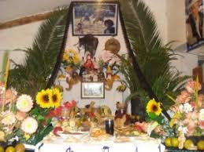 | En La Paz, se colocan ofrendas con t’antawawas y comidas típicas como el plato paceño en altares dedicados a los difuntos. |
| Cochabamba | 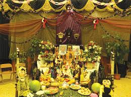 | En Cochabamba, se colocan frutas, bebidas y panes en forma de personas para honrar a los seres queridos. |
| Santa Cruz | 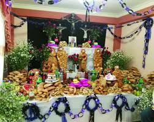 | En Santa Cruz, la tradición se caracteriza por el uso de flores y velas en el altar, acompañadas de comidas típicas de la región. |
| Oruro | 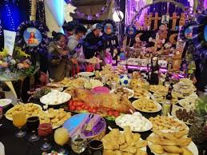 | En Oruro, se celebra con música autóctona y se preparan ofrendas especiales con comida y bebida. |
| Potosí | 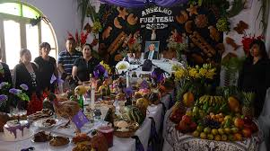 | En Potosí, las mesas de Todos Santos son coloridas y suelen tener frutas y pan de diferentes formas. |
| Chuquisaca | 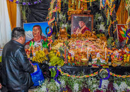 | Se destaca por la preparación de dulces típicos y bebidas locales como parte de la ofrenda. |
| Tarija | 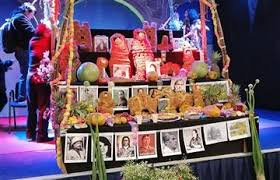 | En Tarija, se preparan mesas con abundantes frutas y vino para recibir a los difuntos. |
| Beni | 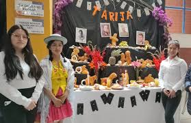 | En Beni, la ofrenda incluye platos de pescado y se colocan imágenes religiosas en el altar. |
| Pando | 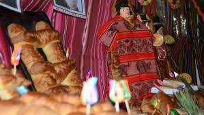 | Las ofrendas en Pando están llenas de elementos de la selva y frutas tropicales, junto con velas y flores. |
Historia de Todos Santos en Bolivia
La celebración de Todos Santos en Bolivia es una tradición que data de tiempos precolombinos y se ha adaptado con la llegada del cristianismo. Esta festividad es un sincretismo de las creencias indígenas, especialmente de los pueblos andinos, y la religión católica introducida por los españoles.
En la cosmovisión andina, se cree que durante el día de Todos Santos (1 de noviembre) y el Día de los Difuntos (2 de noviembre), las almas de los seres queridos regresan a la tierra para visitar a sus familiares. Es una oportunidad para que los vivos y los muertos se reúnan simbólicamente y celebren juntos.
 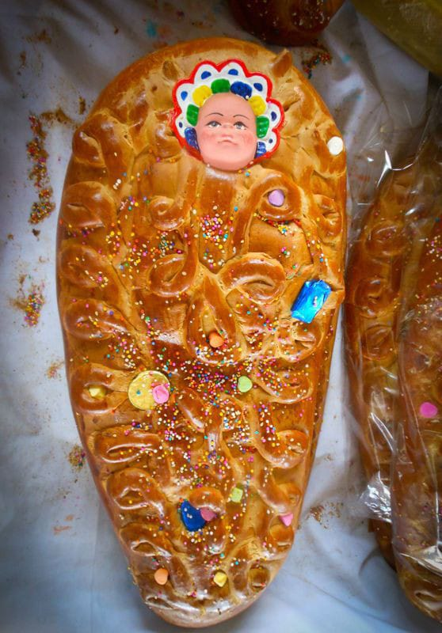
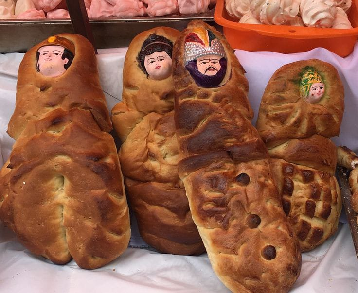
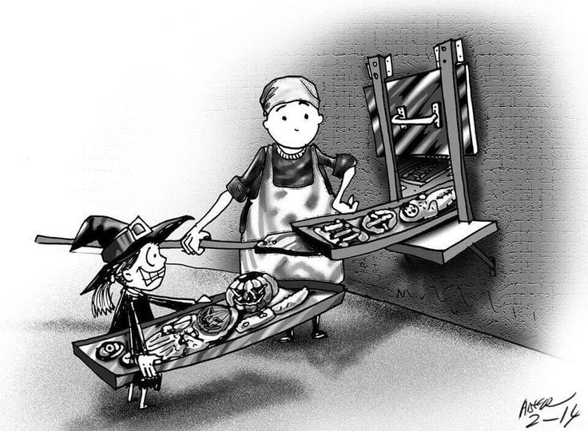
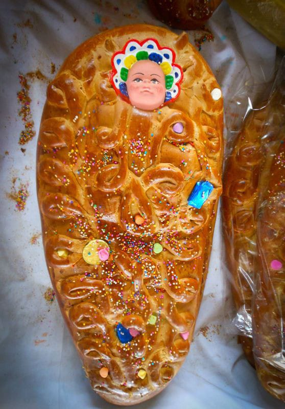
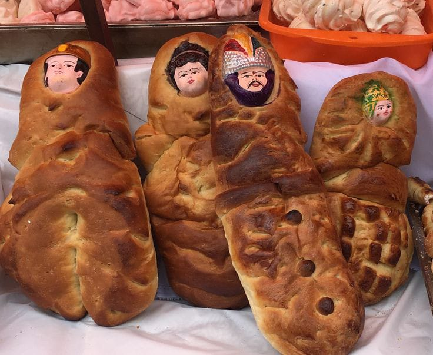
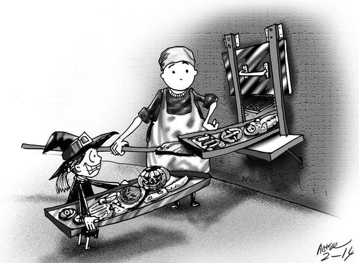
Materiales y Significados en la Mesa de Todos Santos
- T’antawawas: Panes en forma de personas o niños, que representan a los seres queridos fallecidos.
- Escaleras: Pequeñas escaleras de pan o caña, que simbolizan el ascenso y descenso de las almas.
- Velas: Representan la luz que guía a las almas de regreso a casa.
- Comida y bebida: Ofrecidas como un homenaje a los difuntos para que disfruten de sus platillos favoritos.
- Flores: Decoración que simboliza el respeto y la bienvenida a los difuntos.
- Incienso: Se utiliza para purificar el ambiente y guiar a las almas en su camino.
- Frutas: Ofrecen abundancia y representan los deseos de prosperidad para los difuntos.
- Alcohol: Bebidas tradicionales para honrar y recordar a los seres queridos.